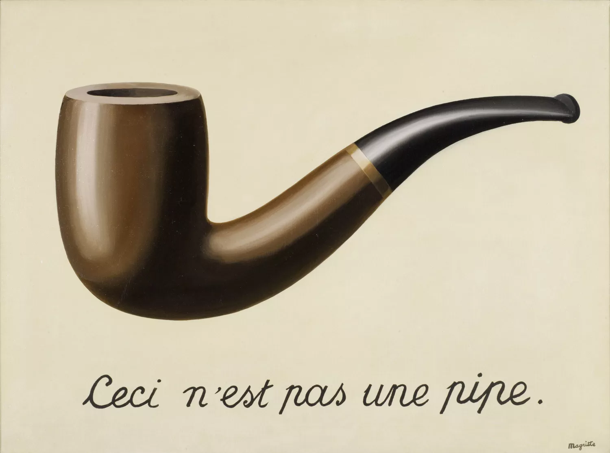
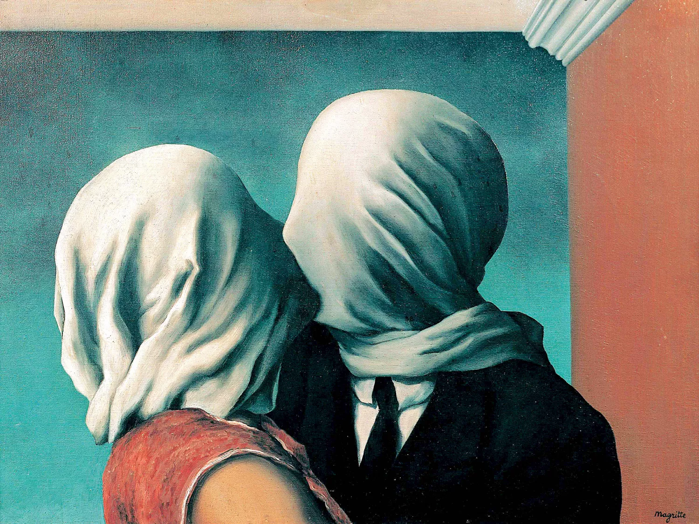
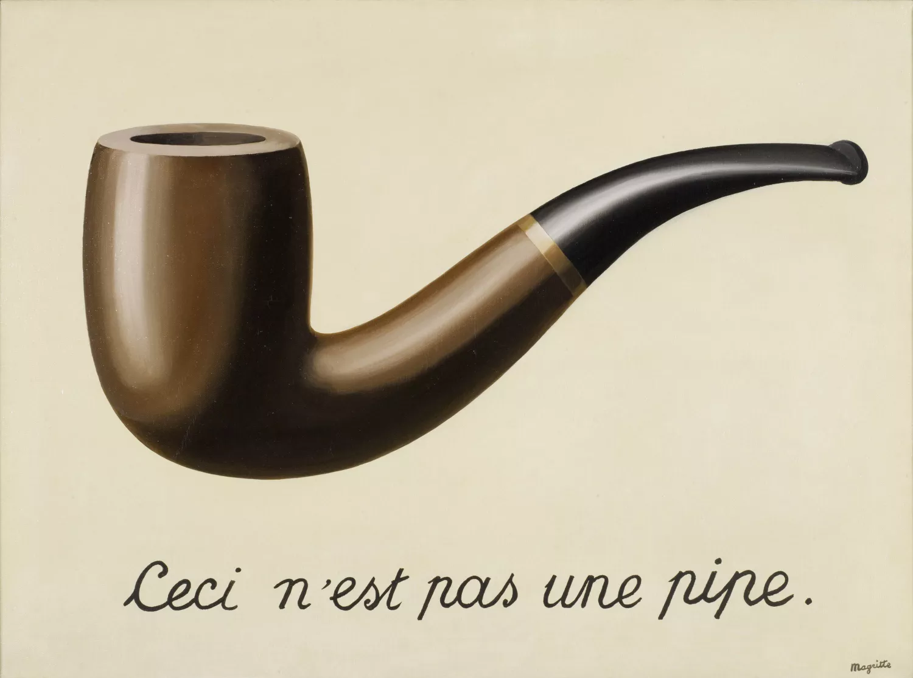
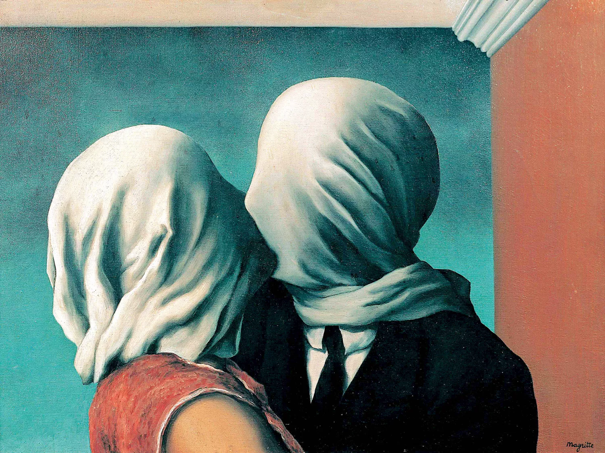

René Magritte
René Magritte (1898-1967) fue un pintor belga que destacó por sus imágenes poéticas y enigmáticas, donde lo cotidiano adquiría un sentido extraño y desconcertante. Su estilo sobrio y conceptual cuestionaba la realidad y el lenguaje visual, convirtiéndose en un referente del surrealismo figurativo. Cuestionaba la realidad como ilusión y apariencia. Se mantuvo alejado del surrealismo militante y dogmático de Breton, tuvo una vida tranquila y burguesa entre París y su Bélgica natal. Su legado artístico incluye obras icónicas como La traición de las imágenes (1929), Los amantes (1928) y El hijo del hombre (1964), en las que cuestionó la realidad y el lenguaje visual. Aunque falleció en 1967, gran parte de la obra de René Magritte aún se exhibe hoy en día, introdujo un nuevo estilo, una forma completamente nueva de ver el arte y fue también un referente del surrealismo. Hoy existe el Museo Magritte en Bruselas, dedicado íntegramente a su obra.
"La pintura es el lenguaje de la realidad visible que no puede ser vista."
Galería de Obras
 


